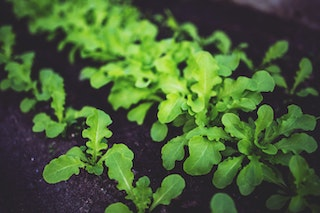

The Project
Norfolk is a vibrant city within Hampton Roads. It is home to the largest naval base in the world
as well as Old Dominion University. With a diverse mix of people, Norfolk is an eclectic region
that offers something for everyone. Despite its large population, there is a strong sense of
community. Its neighborhoods are much like its people, strong and diverse. Cities are constantly
evolving, developing and planning for the future. Like other cities, development and growth have
resulted in vacant lots scattered throughout the area. These lots are to some an eye sore, and
to others they possess immense potential. Development is not the only concern for local
residents. People in all areas are struggling with access to affordable, healthy food. Our
nation faces a health epidemic. The CDC reports the prevalence
of obesity among adults as 42.4% in 2017-2018. This is partly due to the low-cost and abundance
of unhealthy
food
options. Often, it is the low-income demographic that suffers most from the negative effects
of development and obesity. Unable to afford housing costs in less blighted communities or the
price of healthy food options, the less fortunate in our society bears the brunt of these
unfortunate consequences.
Norfolk, like many other areas, is grappling with these issues. In 2016, the Norfolk Department
of Public Health published the
Norfolk Community Health Status Report, outlining important issues the community faces.
They state that the 2015 unemployment rate in Norfolk was 5.6% and 20.5% of the total
Norfolk population was living in poverty. The study cites obesity rates in Norfolk as of
2012 and 2013 having a positive trend downward. Yet, 67.4% of adults are overweight or
obese.
While these figures may be overwhelming, they are not insurmountable. There is a growing trend
across the
country aimed at these very issues. Converting vacant lots into urban farms in order to provide
fresh,
affordable, locally grown produce to the community is becoming very popular. It is scalable,
from
City Farm in Chicago, Illinois to
Seedleaf in Lexington, Kentucky, urban
farms
are changing the cities of all sizes. Norfolk is well positioned to follow suit and make
substantial
health and development gains, similar to those seen in Lexington and Chicago.
From the city’s website, I was able to locate a mowing
schedule for vacant lots. Using Norfolk AIR, I was able to search property
information for the addresses listed. From there, with the use of Norfolk’s Open GIS Data
I was able to obtain parcel data. I then joined to the data collected from the mowing
schedule and Norfolk AIR to the parcel boundaries using QGIS. Although this list may not
be complete and show all city owned vacant lots, it provides a window into the overwhelming
potential these parcels possess.
From my research I have determined these vacant lots total 861,271 square feet (19.68 acres) and
have a total land value of $6,800,200. I propose the city converts these lots into urban farms
which will provide healthy, affordable, locally grown produce to the community as well as
utilize otherwise empty space. In addition, these farms will require farmers to tend the crops,
which will create new jobs. The execution of this may be handled in a couple ways. The city
could
retain ownership of these lots and instead of paying the costs of upkeep, they could create jobs
and employ local citizens to farm, harvest, and sell the produce. Or, the lands could be leased
or sold to non-profits to manage. In either scenario, the city will be able to provide healthier
food to those who need it, as well as create new revenue streams from the sale of the land or
the lease of the land. The newly created jobs also provide new tax revenues. Not only does this
provide much needed healthy food to the community it will help to reduce the poverty rate by
creating jobs. This is not an end-all-be-all solution, but it is a step in the right direction.
A step that the community will benefit from greatly!
